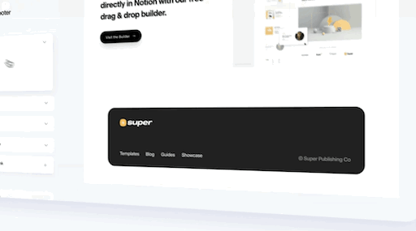
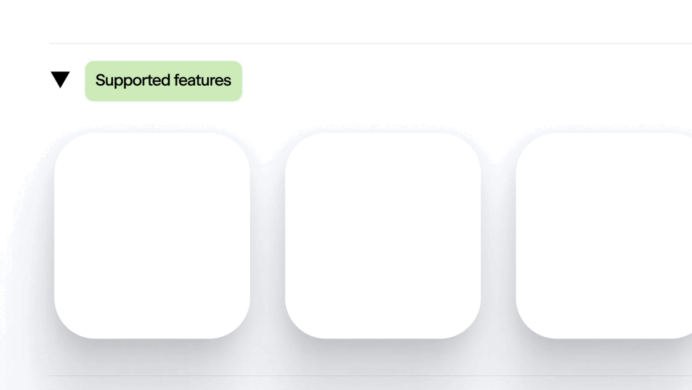

Footers are here!
|
|
Our long awaited footer feature is ready and available for you in your Super
dashboard.
|
|

|
|
Just go to Theme > Custom Footer to add
and style your own
site-wide page
footer. Add links, logos and text, and set the color and layout to match
your branding.
|
|
|
|

|
New Notion Databases
|
|
Notion keeps getting better and better, and the new Notion databases are no
exception. New views and grouping options mean there are more and more
combinations of data for you to use in your Super sites. It’s never been
easier to combine data views in one database view and create a more useful
site for your users.
|
|
But more database views mean more combinations for Super to support. We’re
not merely wrapping a slow Notion page in custom code at Super — we are
building a high-performance static version of your Notion page so it is
super fast, which means we needed to add support for building these new
views into Super.
|
|
We launched support for the new database views last week, so you
should see
support for more database views on your site now. There is more
to come, so
please let us know if you discover a new combination that we have yet to
implement, and we’ll add support for it.
|
Speak with us when you need it
|
|
Feeling stuck? Reach out to our support team for some help! Use the chat
bubble in the Super dashboard, or email us at hello@super.so
|
|
Now, create something super!
|
|